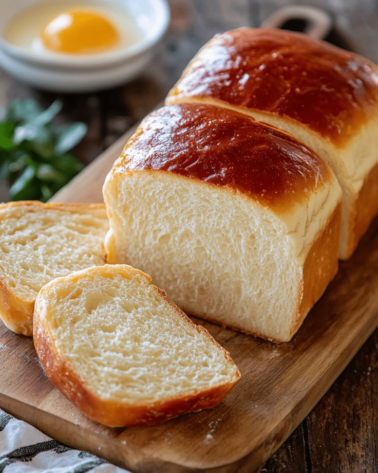

Homemade White Bread Loaf
Introduction
There is something incredibly satisfying about baking bread at home. The smell alone can make a house feel warm and welcoming. This recipe is a beginner-friendly white loaf that gives you a soft inside with a golden crust. The process is simple: mix, knead, proof, shape, and bake. The hardest part is waiting for the dough to rise, but patience is rewarded with a loaf that tastes better than store-bought. Once you try it, you’ll realize bread-making isn’t complicated — just a little practice and timing. You can also use this base dough to create dinner rolls, garlic bread, or cinnamon swirl bread.
Ingredients
- 3 1/2 cups all-purpose flour
- 2 1/4 tsp instant yeast
- 1 cup warm water
- 2 tbsp sugar
- 2 tbsp butter, melted
- 1 tsp salt
Instructions
- Mix warm water, sugar, and yeast. Let sit for 5 minutes until foamy.
- Add flour, salt, and butter. Mix until dough forms.
- Knead 8–10 minutes until smooth and elastic. Place in an oiled bowl, cover, and let rise 1 hour.
- Punch down dough, shape into a loaf, and place in a greased pan. Let rise again 30–40 minutes.
- Bake at 375°F (190°C) for 25–30 minutes until golden and hollow-sounding when tapped.
- Cool before slicing to avoid a gummy texture.